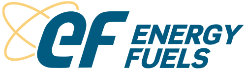

Ranglister Råvarer & uran Energy Fuels

Energy Fuels
Et blik på de samme fund, ikke en ny score. Sådan virker det
Kort fortalt
Scoren på 39 skyldes mest prisen: aktien er meget dyr i forhold til salget (ca. 26 gange årsomsætningen), og selskabet taber penge. Store opkøb udvander ejerne, og opkøbet af VAC alene giver ca. 26 % flere aktier. Til gengæld har selskabet en nettokasse på 283 mio. dollar og et betinget lånetilsagn fra et amerikansk forsvarskontor. Hold øje med, om VAC-opkøbet får myndighedernes godkendelse.
Modellen fandt flere alvorlige problemer. Det betyder ikke, at aktien vil falde.
Største fradrag
- Multipler mod egen historik og peers−24
- Margin−8
- Udvanding−6
Styrker
- Nettokasse+2
- Statslig støtte+2
- Lave omkostninger+1
Sådan er scoren bygget op
Fra 100 til 42, trin for trin: point trækkes fra for forretningen, prisen og revnerne, lægges til for dokumenterede styrker, og så følger tre datajusteringer.
Hold musen over et trin eller vælg det for at se, hvad der drev det. Trin med fund åbner dem nedenfor.
Nøgletal
Pr. 6 nov. 2026. Analytikernes kursmål er ofte optimistiske; læs opsiden som et fingerpeg, ikke en prognose.
- Pris
- 6.66 USD
- Analytikernes mediankursmål
- 24.13 USD
- Opside til median
- +262.3%
- Analytikere
- 7
- Kursmålsinterval
- 14.00 – 32.50 USD
- 52-ugers ændring
- −59%
- P/E (historisk)
- n/a
- Forward P/E
- 24.6
- PEG
- n/a
Fund
Hvert fradrag og hvert plus med sin kilde. Åbn et trin for at læse dem.
Forretning
Bliver virksomheden stærkere, ikke bare større? · 4 fund−18 af −30
- −8MarginDriftsmargin −79 % TTM (−153 % i 2025) og nettotab 82 mio. $ på 106 mio. $ omsætning; bruttomargin 41 % fra uran. ROIC har været negativ hvert år i 2021–26 (−12 til −25 %) og tælles kun her.
- −3Vækstens kvalitetOmsætningen svinger med uransalget (78 → 66 → 106 mio. $). I Q2 blev der kun solgt 310.000 lbs uran af 865.000 lbs produceret (omsætning 25,1 mio. $, nettotab 33,6 mio. $), og der var ingen omsætning fra sjældne jordarter.
- −4KapitalallokeringEn uranproducent med underskud køber sig til et globalt mine-til-magnet-konglomerat på ét år: ASM (299 mio. $), VAC (ca. 1,9 mia. $ + 140 mio. $ nettogæld) og Donald-earn-in, oven i Toliara og Bahia. Det er meget kapital på én gang og før egen separation i stor skala.
- −3Fremtidens segmentSjældne jordarter er stadig i opbygning: fase 1-kredsløbene for tunge jordarter (104 mio. $) skal først idriftsættes ved udgangen af 2027, og fase 2 (6.000 t NdPr/år, 410 mio. $ capex) er endnu ikke bygget.
Pris
Dagens multipler mod selskabets egen historik og dets sammenlignelige selskaber. · 1 fund−24 af −35
- −24Multipler mod egen historik og peersP/S 26 TTM mod 12,9 (2024), 30,6 (2023) og 52 (2025); EV/Sales 23,4; P/B 3,46 mod 1,9–5,0 i 2021–25; forward P/S 15,6. Forward P/E på ca. 22 hviler på et 2027-EPS-estimat (0,49 $), der skal hentes fra et tab på −0,28 $ i 2026, og som VAC-aktierne udvander. Højt prissat for en råvareproducent med underskud.
Revner
Cash flow, kunder, gæld, insidere, guidance og det, der ligger bag hovedtallene. · 4 fund−15 af −35
- −4FinansieringFCF −120 mio. $ TTM. VAC kræver 718 mio. $ kontant – størstedelen af de 937 mio. $ i likvider – og der er 678 mio. $ konvertibel gæld. OSC-lånet på 725 mio. $ er kun betinget.
- −6UdvandingAktietallet er steget 22 % på et år og 31 % i 2025. VAC tilføjer 65,85 mio. aktier (ca. +26 %), ASM-ejerne fik nye aktier, og den konvertible obligation kan give flere.
- −3Integration og eksekveringTre opkøb og fire projekter på fire kontinenter (USA, Tyskland, Australien, Madagaskar/Brasilien) på én gang; VAC-lukningen kræver myndighedsgodkendelser og ventes først i begyndelsen af 2027.
- −2Sentiment og short22 % af aktierne er solgt short (8,5 dages dækning), og aktien er −34 % på 52 uger og under både 50- og 200-dages gennemsnittet.
Plus
Kun dokumenterede styrker. · 3 fund+5 af +15
- +2NettokasseLikvider og værdipapirer for 937 mio. $ mod 678 mio. $ gæld (nettokasse 283 mio. $) og arbejdskapital på 996 mio. $ pr. 30/6.
- +2Statslig støtteBetinget lånetilsagn på 725 mio. $ fra Pentagons Office of Strategic Capital (18/6) til separation og metallisering i USA og White Mesa.
- +1Lave omkostningerPinyon Plain-malmen giver en produktionsomkostning på ca. 23 $/lb mod en realiseret pris på 80,48 $/lb i Q2 (bruttomargin 57 % på uran).
Forbehold
Det, scoren ikke fanger, eller hvor dataene er svage.
Også i Råvarer & uran
De højeste scorer i samme branche.